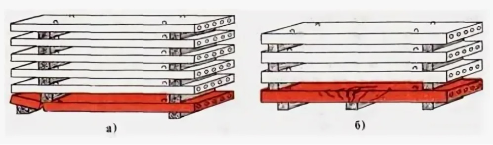
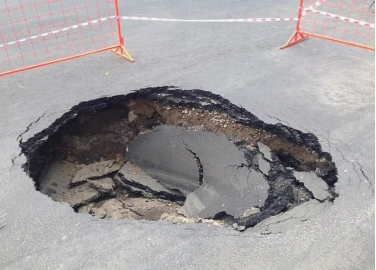
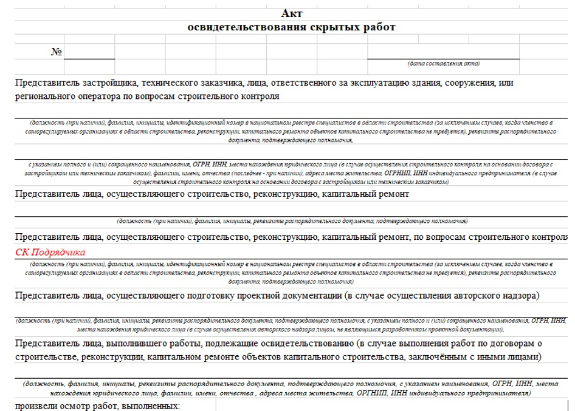

Как происходит строительный контроль подрядчика
На этом уроке поймете, почему СК подрядчика – одно из ключевых лиц строительства. Узнаете, какие нормативные требования помогают соблюдать график, избегать финансовых потерь и минимизировать негативные последствия для организации.
Что такое стройконтроль подрядчика
Один из важных участников строительного процесса – строительный контроль подрядчика, то есть лицо, которое занимается строительством.
Документы, которые регламентируют функции СК подрядчика:
- постановление Правительства РФ от 21 июня 2010 г. N 468;
- СП Строительный контроль объектов капитального строительства.
Ответственного назначают по приказу организации.
Обязанности СК
1. Входной контроль. Проверка качества строительных материалов, изделий, конструкций и оборудования, которые приобретали для строительства.
Это важный этап, который проводят до начала работ.
На этом этапе ищут несоответствия с ПД и РД, а также с паспортами, сертификатами и другими документами, которые прикладывают к материалам. Также заполняют журнал входного контроля (СП 48.13330.2019 изм.1 Приложение И).
На некоторых объектах нефтяной, энергетической и атомной сферы дополнительно ведут акты входного контроля, которые оформляют по форме заказчика.
2. Проверка соблюдения норм и правил складирования и хранения продукции. Неправильное складирование и хранение может ухудшить или привести в негодность материалы и оборудование. Это ведет к финансовым потерям организации, так как забракованный материал использовать нельзя.

3. Проверка соблюдения последовательности и состава технологических операций при строительстве объекта капитального строительства.
Грубые нарушения приводят к дефектам конструкций, которые подрядчик устраняет за свой счет. Конструкцию, которую признают непригодной, демонтируют.

4. Освидетельствование работ. Подрядчик и заказчик освидетельствуют скрытые работы и проводят промежуточную приемку строительных конструкций, которые влияют на безопасность объекта капитального строительства, участков сетей инженерно-технического обеспечения.
СК подрядчика участвует в подписании АОСР, АООК и других документов.

5. Приемка законченных этапов работ.
6. Проверка соответствия объекта проектной и рабочей документации. Подрядчик и заказчик проверяют, соответствует ли законченный объект:
- требованиям проектной и подготовленной на ее основе рабочей документации, результатам инженерных изысканий,
- требованиям градостроительного плана земельного участка и технических регламентов.
Эти обязательные пункты (постановление Правительства 468).
Что изменилось в новом СП на Строительный контроль объектов ОКС
В новый СП на Строительный контроль объектов ОКС добавили пять новых функций СК подрядчика:
- Входной контроль ПД и РД, предоставленной застройщиком
- Освидетельствование ГРО ОКС
- Контроль соблюдения охраны труда
- Апробация, испытания и пусконаладка инженерно-технических систем и оборудования
- Комплексные испытания инженерных систем, в том числе систем пожарной безопасности при приемке завершенного объекта застройщиком, техническим заказчиком